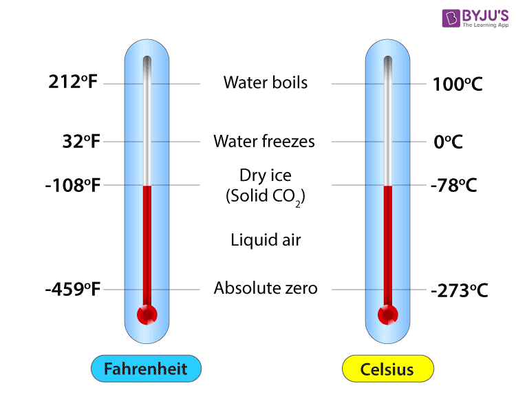
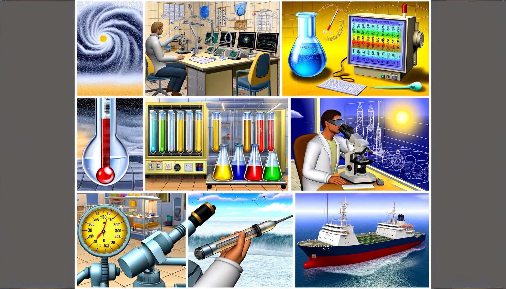
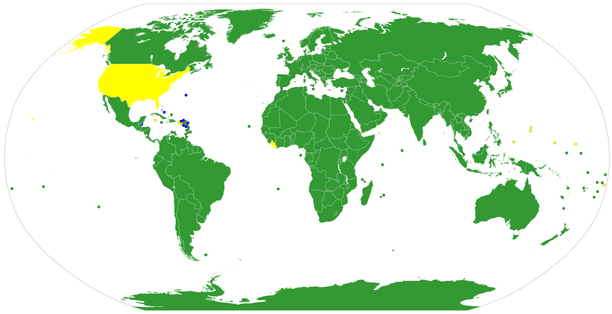
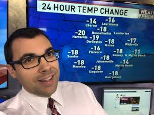

Understanding Temperature Scales
Celsius and Fahrenheit are two different scales for measuring temperature. Let's explore their origins and principles.

The Science Behind Celsius
Celsius is based on the metric system, making it more logical and easier to use in scientific contexts. Here's why:
- Directly related to the metric system used globally.
- Easy conversion with metric units, such as liters of water.

Celsius in Daily Life
Using Celsius in everyday situations offers practical advantages:
- 0°C is freezing, 100°C is boiling - simple and intuitive.
- More straightforward for gauging weather conditions.
Celsius Around the World
Celsius is the standard in most countries around the globe. Here's a visual representation:

Real-Life Examples
Learn from scientists, meteorologists, and international travelers who prefer Celsius:
"Celsius makes scientific calculations simpler and more consistent." - Dr. Jane Doe

"Weather forecasting is more straightforward with Celsius." - John Smith